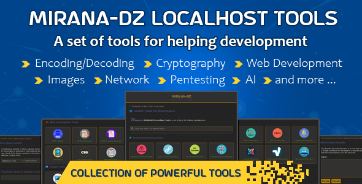

الحمد لله رب العالمين. والصلاة والسلام على أشرف المرسلين، وعلى آله وصحبه ومن والاه ومن تبعهم بإحسان وإهتدى بهديهم وسار على نهجهم إلى يوم الدين.
تجدون في هذه الصفحة مجموعة من المعلومات حول هذا المشروع المسمى MIRANA-DZ LOCALHOST TOOLS.

قمنا وبحمد الله بإنشاء هذا الموقع بغرض جمع أدوات وتقنيات، وتسطيرها في صفحات لتسهيل العودة إليها عند الحاجة. يحتوي الموقع عـلى أدوات مفيدة لمطويري البرمجيات، للتشفير وفك التشفير ومحولات مختلفة ومولدات أكواد تساعد وتسهل عمل المبرمج.
قائمة بجميع الأدوات المتاحة في MIRANA-DZ Localhost Tools.
عدد الأدوات: +60
Apache2 webserver
بي أش بي الإصدار 8 أو أعلى مع توفر الملحقات والتباعيات التالية:
- cURL PHP Extension
- Fileinfo PHP Extension
- ZIP PHP Extension
- Dom PHP Extension
- GD PHP Extension
- mbString PHP Extension
- tuupola base32
1- قم بتحميل الملفات الموجودة في الملف "src" إلى خادم الويب الخاص بك.
2- قم بالتعديل على ملف الإعدادات في "config/config.php"

3- إنتقل إلى صفحة "public/index.php" في متصفح الويب الخاص بك.
سيتم إضافة المزيد من الأدوات من وقت إلى آخر، وتحسين أداء الموقع في الأيام القادمة إن شاء الله، ولأي إستفسار أو إقتراح يرجى الإتصال بي على الإيمايل التالي : mirana-dz [at sign] proton [dot] me